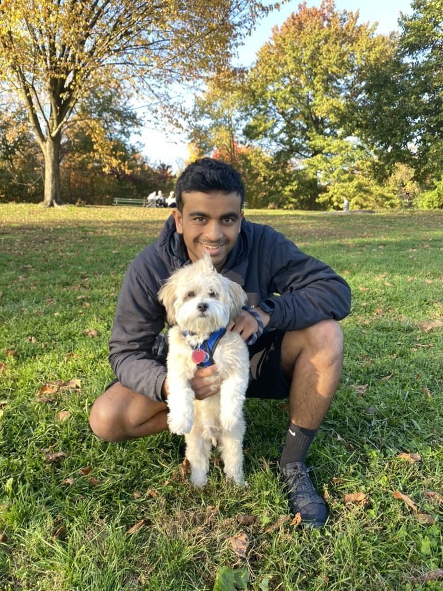

About

Hi, I'm Avinash—but most people call me Avi. I'm an AI researcher.
I currently work at PayPal, where I investigate post-training and evaluation methods for conversational agents, collaborative AI systems, and foundation-model development for financial applications.
This site is a collection of notes, questions, and thoughts I find interesting. Outside of work, I enjoy generally thinking and learning about the world—particularly through the questions posed by philosophy and psychology. In the spirit of Montaigne's Essays, I intend to use this space to develop and revise my preliminary thoughts and questions, and see what useful connections emerge therefrom. My hope is that intentionally committing ideas to writing will help me better organize and think critically about them (Quitadamo and Kurtz, 2007).